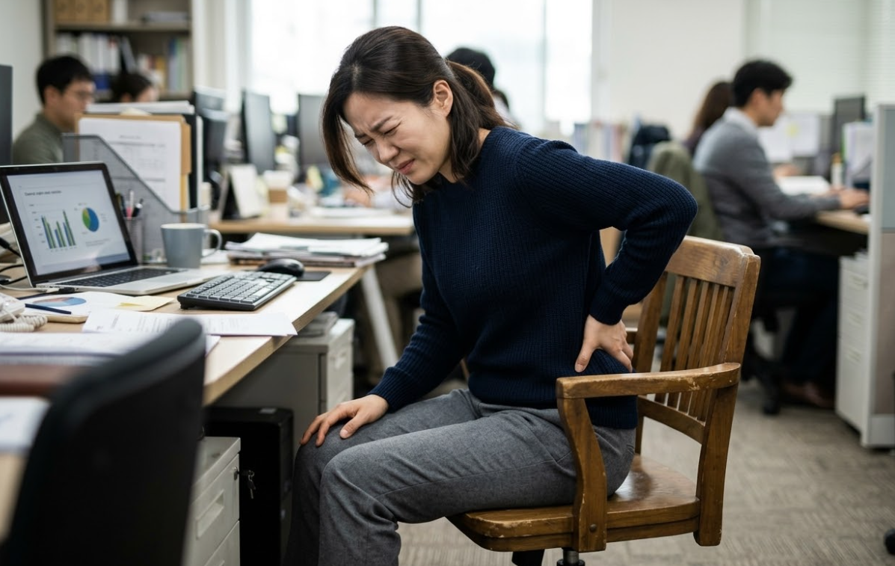
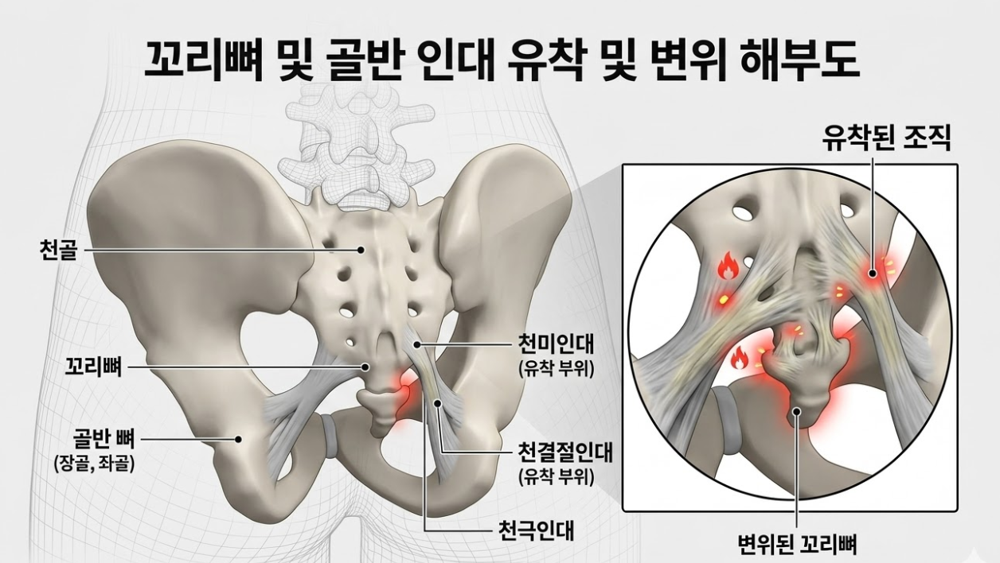

"딱딱한 의자에 앉기 겁나나요? 닿기만 해도 찌릿한 '꼬리뼈 통증' 해결책"

💡 바디올 30초 핵심 요약
1. 꼬리뼈 통증은 사고 후유증 외에도 골반 불균형으로 인한 인대 장력이 주요 원인입니다.
2. 단순히 쉬는 것보다 휘어진 꼬리뼈와 틀어진 골반의 구조적 정렬이 필수적입니다.
3. 바디올은 SART/추나 정렬 + 도침으로 꼬리뼈 주변 유착을 해결하여 통증을 잡습니다.
1. 나의 꼬리뼈 통증 진단하기
- 의자에 앉을 때 꼬리뼈 끝이 바닥에 닿으면 콕콕 쑤시거나 날카로운 통증이 있다.
- 오래 앉아 있다가 일어날 때 엉덩이 깊은 곳이 뻐근하고 허리를 펴기 힘들다.
- 정자세보다 한쪽으로 비스듬히 앉아야 통증이 덜하다.
- 꼬리뼈 주변을 손으로 누르면 명확한 압통 지점이 느껴진다.
2. 메커니즘 분석: 왜 자꾸 아플까?
꼬리뼈는 골반의 중심인 천골 끝에 매달려 수많은 인대와 연결되어 있습니다. 골반이 뒤틀리면 이 인대들이 한쪽으로 팽팽하게 당겨지며 만성 염증을 유발하고, 꼬리뼈 자체가 안으로 휘어지며 앉을 때마다 자극을 받게 됩니다.

3. 바디올의 통합 치료 솔루션 (Total Care)
바디올한의원은 예민한 꼬리뼈 주변 조직을 섬세하게 다루며 구조적 원인을 해결합니다.
① 바디올 특화 치료: 원인 정렬 및 박리
• 공간척추교정(SART) / 추나요법: 뒤틀린 골반과 천골의 정렬을 바로잡아 꼬리뼈에 가해지는 비정상적인 장력을 제거합니다.
• 도침치료(유착박리술): 만성 염증으로 굳고 유착된 꼬리뼈 주변 인대를 미세 분리하여 가동성을 높이고 통증을 차단합니다.
② 바디올 종합 기초 치료: 염증 및 근육 이완
• 종합 치료 솔루션: 침 치료와 고농도 봉약침으로 심부 염증을 제어하며 부항과 전자뜸으로 골반저 근육을 이완시킵니다.
• 현대 물리치료: ICT와 TENS 기기로 골반 주변 신경 통증을 안정시키고 혈류량을 증대시킵니다.

4. 재발 방지를 위한 생활 수칙
- 도넛 방석 사용: 꼬리뼈가 직접 의자에 닿지 않도록 공간이 있는 방석을 활용하세요.
- 경추 위생 스트레칭: 가슴을 펴고 고개를 뒤로 젖히는 동작으로 척추 전체의 하중을 분산시켜 골반에 가해지는 압박을 줄여줍니다.